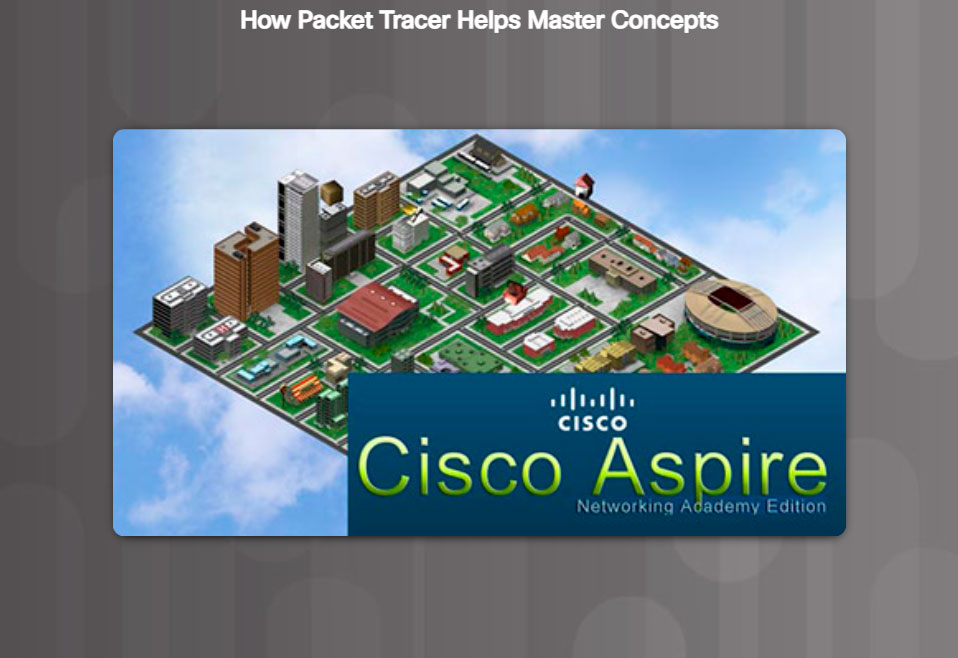

Educational Games
Packet Tracer Multi-User games enable you or a team to compete with other students to see who can accurately complete a series of networking tasks the fastest. It is an excellent way to practice the skills you are learning in Packet Tracer activities and hands-on labs.
Cisco Aspire is a single-player, standalone strategic simulation game. Players test their networking skills by completing contracts in a virtual city. The Networking Academy Edition is specifically designed to help you prepare for the CCENT certification exam. It also incorporates business and communication skills ICT employers seek in job candidates.
Performance-Based Assessments
The Networking Academy performance-based assessments have you do Packet Tracer activities like you have been doing all along, only now integrated with an online assessment engine that will automatically score your results and provide you with immediate feedback. This feedback helps you to more accurately identify the knowledge and skills you have mastered and where you need more practice. There are also questions on chapter quizzes and exams that use Packet Tracer activities to give you additional feedback on your progress.
